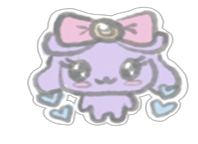

Tamagotchi in the USA: Discovering the Latest Models and Features
Tamagotchis have changed a lot over the years, with new versions bringing fun updates and cool features. From colorful screens to new ways to play, each model offers something different. Let's take a look at the latest Tamagotchi models!
TAMAGOTCHI ON (2019)
The Tamagotchi On was a major upgrade, bringing a color display and new interactive features to North America (Tamagotchi On, n.d.; Bandai Namco, n.d.).
- Key Highlights:
-
- Colorful Screen: Unlike earlier versions, the Tamagotchi On features a vibrant color display.
- Different Themes: Choose from versions like Fairy, Magic, and Wonder Garden, each unlocking unique characters and locations.
- Family Building: Marry your Tamagotchi and raise a family, with traits passed from parent to child.
- Connectivity: You can connect with other Tamagotchi On devices using Bluetooth or infrared for playdates, gift exchanges, and more.
- Special Content: Each theme has exclusive areas and characters to discover.
TAMAGOTCHI NANO (2010, RELAUNCHED 2017)
The Tamagotchi Nano is a smaller, pocket-sized version of the classic virtual pet, with new themed editions (Tamagotchi Nano (Franchise), n.d.; Bandai Namco, n.d.).
- Key Highlights:
-
- Compact Size: It’s much smaller than typical Tamagotchis, making it easy to carry around.
- Themed Editions: The Nano comes in various themes, including Star Wars, Harry Potter, Hello Kitty, and many more.
- Color Screen & Rechargeable Battery: The most recent Nano models feature a color screen and a rechargeable battery for added convenience.
TAMAGOTCHI PIX (2021)
The Tamagotchi Pix, released in 2021, adds innovative features like a built-in camera and touch-sensitive buttons (Tamagotchi Pix, n.d.; Bandai Namco, n.d.).
- Key Highlights:
-
- Camera Function: Use the camera to capture real-world images that your Tamagotchi can interact with in the game.
- Touch Buttons: Instead of traditional buttons, the Pix has touch-sensitive controls that allow for more fluid interaction.
- New Games: The Pix introduces exciting new mini-games and activities for caring for your Tamagotchi.
TAMAGOTCHI UNI (2023)
The Tamagotchi Uni brings the Tamagotchi experience to your wrist, combining virtual pet care with wearable technology (Tamagotchi Uni, n.d.; Bandai Namco, n.d.).
- Key Highlights:
-
- Wristwatch Design: The Uni is designed to be worn on your wrist, offering a portable Tamagotchi experience wherever you go.
- Wi-Fi Connectivity: It features Wi-Fi, allowing you to connect with others online and share experiences.
- Physical Buttons: Unlike other models with touchscreens, the Uni uses physical buttons, providing a classic feel.
- Step Counter: The Uni includes a pedometer that tracks your steps and adds to the gameplay.
TAMAGOTCHI CONNECTION (2024)
To celebrate its 20th anniversary, the Tamagotchi Connection returns with a familiar design and updated features (Tamagotchi Connection (2024), n.d.; Bandai Namco, n.d.).
- Key Highlights:
-
- Classic Design: The Connection brings back the small, keychain design with a unique antenna, similar to older models.
- Shell Variations: It comes in a variety of shell designs, including both retro and new looks.
- Mini-Games: Play a range of mini-games to earn points and unlock fun items for your pet.
START RAISING ONE TODAY!
A Brand New Life
